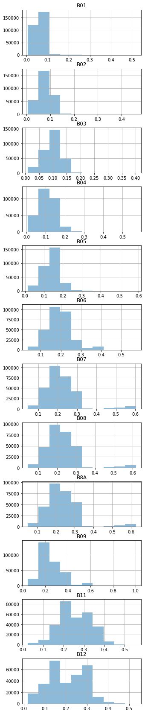
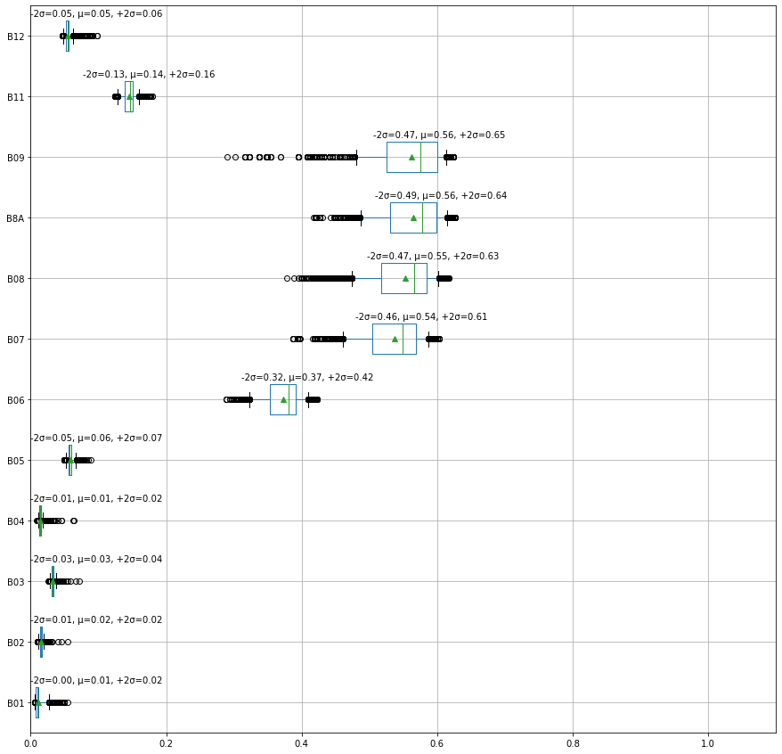
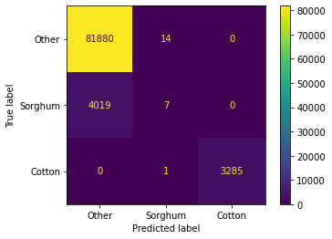
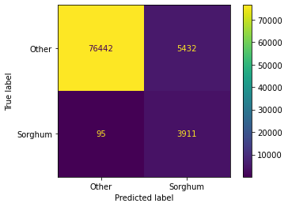
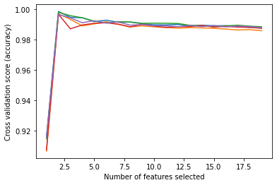
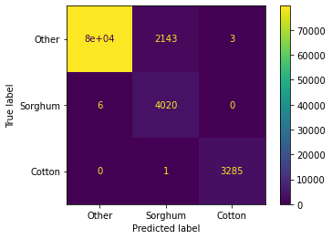

Code
import PIL
import numpy as np
import matplotlib.pyplot as plt
import pandas as pd
import sklearnWaseem Waheed
January 10, 2022
As part of my ML practice, I was sent an ML challenge to develope a classifier that classfies pixels of hyperspectral images into various crops, which is an instance of a common problem known as crop mapping.
The satellite images in this instance are captured by the Sentinel-2 satellite.
Sentinel-2 is an earth observation mission by the European Space Agency.
The following is the challenge description:
You must implement a machine learning model to perform crop classification, and determine what crop types are grown where in an image of farm paddocks (also known as one-shot in-season crop classification).
Sentinel-2 is a satellite that captures 12 different wavelengths of light (also known as bands) in an image. These range from visible light (red, green, blue) to infra-red. The values for each band changes depending upon the material/object that is on the ground.
After reading the problem description carefully, we start by loading the provided dataset
<class 'pandas.core.frame.DataFrame'>
RangeIndex: 299894 entries, 0 to 299893
Data columns (total 15 columns):
# Column Non-Null Count Dtype
--- ------ -------------- -----
0 B01 299894 non-null float64
1 B02 299894 non-null float64
2 B03 299894 non-null float64
3 B04 299894 non-null float64
4 B05 299894 non-null float64
5 B06 299894 non-null float64
6 B07 299894 non-null float64
7 B08 299894 non-null float64
8 B8A 299894 non-null float64
9 B09 299894 non-null float64
10 B11 299894 non-null float64
11 B12 299894 non-null float64
12 label_id 299894 non-null int64
13 cloud_prob 299894 non-null float64
14 label 299894 non-null object
dtypes: float64(13), int64(1), object(1)
memory usage: 34.3+ MBNo null columns, thats good.
There are 3 labels.
Let’s check the label counts.
label label_id
Cotton 2 11087
Other 0 275350
Sorghum 1 13457
dtype: int64The labels are imbalanced.
Let’s remove rows with cloud probability greater than 2 and check the counts again
('with clouds: 299894', 'without clouds: 297351')label label_id
Cotton 2 11087
Other 0 272879
Sorghum 1 13385
dtype: int64Let’s check the data ranges of features.
| B01 | B02 | B03 | B04 | B05 | B06 | B07 | B08 | B8A | B09 | B11 | B12 | label_id | cloud_prob | |
|---|---|---|---|---|---|---|---|---|---|---|---|---|---|---|
| count | 297351.000000 | 297351.000000 | 297351.000000 | 297351.000000 | 297351.000000 | 297351.000000 | 297351.000000 | 297351.000000 | 297351.000000 | 297351.000000 | 297351.000000 | 297351.000000 | 297351.000000 | 297351.000000 |
| mean | 0.061849 | 0.076644 | 0.097624 | 0.109417 | 0.139290 | 0.193856 | 0.217530 | 0.226073 | 0.235409 | 0.249065 | 0.255259 | 0.204514 | 0.119586 | 0.041271 |
| std | 0.026723 | 0.029300 | 0.031394 | 0.046590 | 0.040789 | 0.060590 | 0.084279 | 0.085944 | 0.087007 | 0.095317 | 0.077941 | 0.085845 | 0.424096 | 0.234945 |
| min | 0.005600 | 0.005500 | 0.008900 | 0.007200 | 0.014600 | 0.036000 | 0.045900 | 0.044500 | 0.050200 | 0.044700 | 0.024500 | 0.019300 | 0.000000 | 0.000000 |
| 25% | 0.048600 | 0.061100 | 0.079700 | 0.080000 | 0.115600 | 0.157400 | 0.170000 | 0.177600 | 0.186900 | 0.189800 | 0.206000 | 0.135400 | 0.000000 | 0.000000 |
| 50% | 0.060800 | 0.074900 | 0.098000 | 0.105200 | 0.139900 | 0.188700 | 0.203800 | 0.213800 | 0.222500 | 0.225300 | 0.247500 | 0.210300 | 0.000000 | 0.000000 |
| 75% | 0.077300 | 0.096900 | 0.118000 | 0.147800 | 0.167300 | 0.231300 | 0.257900 | 0.266400 | 0.277400 | 0.293550 | 0.320500 | 0.283300 | 0.000000 | 0.000000 |
| max | 0.519100 | 0.460400 | 0.401200 | 0.570000 | 0.585900 | 0.573100 | 0.603300 | 0.617200 | 0.626500 | 1.002700 | 0.555100 | 0.532600 | 2.000000 | 2.000000 |
array([[<AxesSubplot:title={'center':'B01'}>],
[<AxesSubplot:title={'center':'B02'}>],
[<AxesSubplot:title={'center':'B03'}>],
[<AxesSubplot:title={'center':'B04'}>],
[<AxesSubplot:title={'center':'B05'}>],
[<AxesSubplot:title={'center':'B06'}>],
[<AxesSubplot:title={'center':'B07'}>],
[<AxesSubplot:title={'center':'B08'}>],
[<AxesSubplot:title={'center':'B8A'}>],
[<AxesSubplot:title={'center':'B09'}>],
[<AxesSubplot:title={'center':'B11'}>],
[<AxesSubplot:title={'center':'B12'}>],
[<AxesSubplot:>],
[<AxesSubplot:>]], dtype=object)
To plot the \(∓2σ\) standard deviations, we can plot box plots with the whiskers of the boxes at the \(∓2σ\) by setting the whiskers to the percentiles 2.28, 97.72 Source
def plot_means_and_stds(data):
ax, bp = data[bands].boxplot(whis=[2.28, 97.72], vert=False, showmeans=True, figsize=(15,15), return_type="both")
means = data[bands].mean(axis=0)
stds = data[bands].std(axis=0)
for i, line in enumerate(bp['medians']):
x, y = line.get_xydata()[1]
text = '-2σ={:.2f}, μ={:.2f}, +2σ={:.2f}'.format(means[i]-2*stds[i], means[i], means[i]+2*stds[i])
ax.annotate(text, xy=(max(0, x-0.07), y+0.07))
ax.set_xlim(0, 1.1)
This figure is promising as the values in the bands B6-B9 seem to be distinguishing features for the cotton crop.
The first model I am going to try is the multiclass logistic regression for it’s simplicity to get an idea about the possible accuracy.
def train_test_assess(data, model):
X = data[data.columns[~data.columns.isin(['label_id', 'label', 'cloud_prob'])]]
y = data['label_id']
labels = [ids2labels[id] for id in sorted(data['label_id'].unique().tolist())]
X_train, X_test, y_train, y_test = train_test_split(X, y, test_size=0.3, random_state=0)
model.fit(X_train, y_train)
y_predicted = model.predict(X_test)
print('Accuracy: {:.2f}%'.format(accuracy_score(y_predicted, y_test)*100 ))
ConfusionMatrixDisplay.from_estimator(model, X_test, y_test, display_labels=labels)
# if binary classification, report the AUC metric
if len(labels) == 2:
fpr, tpr, thresholds = roc_curve(y_test==1, y_predicted==1, pos_label=1)
print('AUC: {:.2f}'.format(auc(fpr, tpr)))
return modelAccuracy: 95.48%
This initial result is consistent with our initial intuition, Cotton is easier classify than Other and Sorghum.
It might a good idea to search the literature at this point for discriminative features.
I’m going to attempt to try to focus on the Sorghum vs Other problem next.
Other 95.324246
Sorghum 4.675754
Name: label, dtype: float64The data is highly imbalanced, as a first attempt to fix that, let’s try to add weights.
Next, we test the benefit of adding NDVI and NDWI indices
NDVI: The normalized difference vegetation index, an effective index for quantifying green vegetation.
NDWI: The normalized difference water index used to monitor changes related to water content in water bodies.
NDMI: The normalized difference moisture index used to monitor changes in water content of leaves.
For a full list of remote sensing indices https://custom-scripts.sentinel-hub.com/custom-scripts/sentinel-2/indexdb/
data_bin_aug = data_bin.copy()
# Calculate NDVI according to https://custom-scripts.sentinel-hub.com/custom-scripts/sentinel-2/ndvi/
data_bin_aug['NDVI'] = (data_bin['B08'] - data_bin['B04'])/(data_bin['B08'] + data_bin['B04'])
# Calculate NDWI according to https://custom-scripts.sentinel-hub.com/custom-scripts/sentinel-2/ndwi/
data_bin_aug['NDWI'] = (data_bin['B03'] - data_bin['B08'])/(data_bin['B03'] + data_bin['B08'])
# Calculate NDMI according to https://custom-scripts.sentinel-hub.com/custom-scripts/sentinel-2/ndmi/
data_bin_aug['NDMI'] = (data_bin['B08'] - data_bin['B11'])/(data_bin['B08'] + data_bin['B11'])
# Calculate NDMI according to https://custom-scripts.sentinel-hub.com/custom-scripts/sentinel-2/gndvi/#
data_bin_aug['GNDVI'] = (data_bin['B08'] - data_bin['B03'])/(data_bin['B08'] + data_bin['B03'])
# source : https://eprints.lancs.ac.uk/id/eprint/136586/2/Author_Accepted_Manuscript.pdf
data_bin_aug['GCVI'] = (data_bin['B8A'] / data_bin['B03']) - 1
data_bin_aug['SR'] = data_bin['B8A'] / data_bin['B04']
data_bin_aug['WDRVI'] = (0.2*data_bin['B8A'] - data_bin['B04'])/(0.2*data_bin['B8A'] + data_bin['B04'])To solve the data imbalance issue, let’s use resampling techinques.
First we are going to start by under-sampling, that is to randomly pick samples from the majority group such that the majority and minority classes become of the same size.
Undersampling
Class distribution:
Other 272879
Sorghum 13385
Name: label, dtype: int64
Accuracy: 93.74%
AUC: 0.96{'B01': 16.977792737026085,
'B02': 6.752882418570922,
'B03': 2.554969210163749,
'B04': 2.6563337118232186,
'B05': 3.3259631537606507,
'B06': 3.9223474314521467,
'B07': 3.8106562700819713,
'B08': 3.5390293533814705,
'B8A': 4.125422731372653,
'B09': 11.247041256299674,
'B11': 6.183133344698969,
'B12': 8.360377618059259,
'NDVI': 3.579062573810352,
'NDWI': 4.239217235594501,
'NDMI': 4.276727881317791,
'GNDVI': 4.767229788099875,
'GCVI': 3.348787865016853,
'SR': 3.351913622009852,
'WDRVI': 2.9811117974600068}Since features B03, B04, B05, B07, B08 seem to have the least effect, let’s try removing them
# Class count
clf_bin6 = make_pipeline_with_sampler(
RandomUnderSampler(),
RandomForestClassifier(),
)
# remove the less important features
data_bin_imp = data_bin_aug.copy()
data_bin_imp = data_bin_imp[data_bin_imp.columns[~data_bin_imp.columns.isin(['B03', 'B04', 'B05', 'B07' ,'B08'])]]
clf_bin6 = train_test_assess(data_bin_imp, clf_bin6)
calc_feats_importances(clf_bin6[1], data_bin_imp)Accuracy: 93.56%
AUC: 0.95{'B01': 18.12897209994457,
'B02': 7.237858677151985,
'B06': 6.580060537808315,
'B8A': 6.095497050380915,
'B09': 12.43070752907386,
'B11': 8.321135912566861,
'B12': 9.327024620656,
'NDVI': 4.785401272622748,
'NDWI': 4.975197715869764,
'NDMI': 5.109331237453354,
'GNDVI': 5.734742204540842,
'GCVI': 4.490255452417144,
'SR': 3.3861633080797793,
'WDRVI': 3.3976523814338675}
Next, I will test the accuracy on the full data (including Sorghum)
Accuracy: 94.46%{'B01': 9.6464853828485,
'B02': 9.714544169136957,
'B03': 2.7639361993439553,
'B04': 8.411027820590892,
'B05': 2.6418393007109287,
'B06': 4.068313242872104,
'B07': 12.051608284154835,
'B08': 18.782597265383384,
'B8A': 12.360924465779007,
'B09': 8.479810816147658,
'B11': 4.532715522991699,
'B12': 6.546197530040068}I am going to pick the model with RandomDownSampler as it gives satisfactory results for the current data, the next step is a feature selection process.
# source: https://imbalanced-learn.org/stable/under_sampling.html
from collections import Counter
from imblearn.under_sampling import RandomUnderSampler
print(sorted(Counter(y).items()))
cc = RandomUnderSampler(random_state=0)
X_resampled, y_resampled = cc.fit_resample(X, y)
print(sorted(Counter(y_resampled).items()))
X_train, X_test, y_train, y_test = train_test_split(X_resampled, y_resampled, test_size=0.3)[(0, 272879), (1, 13385)]
[(0, 13385), (1, 13385)]Next, we perform feature selection to find the most important features.
# source: https://scikit-learn.org/stable/auto_examples/feature_selection/plot_rfe_with_cross_validation.html#sphx-glr-auto-examples-feature-selection-plot-rfe-with-cross-validation-py
import matplotlib.pyplot as plt
from sklearn.svm import SVC
from sklearn.model_selection import StratifiedKFold
from sklearn.feature_selection import RFECV
# Create the RFE object and compute a cross-validated score.
svc = RandomForestClassifier()
min_features_to_select = 1 # Minimum number of features to consider
rfecv = RFECV(
estimator=svc,
step=1,
cv=StratifiedKFold(5),
scoring="roc_auc",
min_features_to_select=min_features_to_select,
)
rfecv.fit(X_train, y_train)
print("Optimal number of features : %d" % rfecv.n_features_)
# Plot number of features VS. cross-validation scores
plt.figure()
plt.xlabel("Number of features selected")
plt.ylabel("Cross validation score (accuracy)")
plt.plot(
range(min_features_to_select, len(rfecv.grid_scores_) + min_features_to_select),
rfecv.grid_scores_,
)
plt.show()Optimal number of features : 2C:\Users\user\anaconda3\envs\ml-challenge-env\lib\site-packages\sklearn\utils\deprecation.py:103: FutureWarning: The `grid_scores_` attribute is deprecated in version 1.0 in favor of `cv_results_` and will be removed in version 1.2.
warnings.warn(msg, category=FutureWarning)
Accuracy: 97.59%{'B01': 50.180496359837235, 'B09': 49.819503640162765}
Now that we have trained a model, let’s try to apply it to the images provided
def predict_label_image(model, images_df, bands, output_fname='predicted.png'):
# initialize pred_label column to 10 (a non valid label)
images_df.loc[:, 'pred_label'] = 10
# limit the prediction to the pixels where the mask is true
images_df.loc[images_df['mask'] == True, 'pred_label'] = model.predict(images_df.loc[images_df['mask'] == True, bands])
# create RGB predicted label image
images_df.loc[:,'R'] = 0
images_df.loc[:,'G'] = 0
images_df.loc[:,'B'] = 0
# when the predicted label is 0 (Other) set the value of pixel RED
images_df.loc[images_df['pred_label'] == 0, 'R'] = 255
# when the predicted label is 1 (Sorghum) set the value of pixel GREEN
images_df.loc[images_df['pred_label'] == 1, 'G'] = 255
# when the predicted label is 2 (Cotton) set the value of pixel BLUE
images_df.loc[images_df['pred_label'] == 2, 'B'] = 255
chans = ['R', 'G', 'B']
dims = (4000, 4000)
rgb_label = np.zeros(dims + (3, ), 'uint8')
for idx, chan in enumerate(chans):
img = images_df[chan].to_numpy()
rgb_label[..., idx] = img.reshape(dims)
img = PIL.Image.fromarray(rgb_label)
img.save(output_fname)
return rgb_label